Physical intuition
At the image level, the source contains a broad plasma structure and a thinner photon ring. The plasma dominates visual appearance, whereas the photon ring carries the target geometric information.[1][5][6]
In Fourier space, this geometric distinction becomes a separation problem. Broad image features and thin oscillatory ring structure concentrate differently, so the first inference question is: what fraction of the visibility is attributable to ring structure, and what fraction is attributable to structured nuisance? The provenance note then asks where that nuisance comes from physically and answers: from ordinary escaping geodesics rather than an arbitrary visibility-space contaminant. The coherence note asks how strongly that physically admissible nuisance can still overlap the ring and answers with a phase-space bound. The newer subring note asks for the same kind of structure on the signal side and answers: a weighted hierarchy of winding-order subrings rather than one monolithic ring template.[9][2][7][8]
Why the heuristic can lose readability early
A long-baseline amplitude heuristic, in the same spirit as the BHEX ring-shape methodology, is effectively trying to read the ring directly from the oscillatory pattern of $|y|$. That works when contamination is mild. But the modulus is nonlinear, so structured nuisance can shift peaks and spacing before the underlying ring is truly gone.[1][5]
A fuller estimator is complementary in what it demands. It does not require the ring to be visually obvious in amplitude space. It only requires the ring to remain identifiable under the joint model. The provenance note makes that joint model more physical by shrinking the nuisance family, the geodesic-coherence extension sharpens it further by proposing that identifiability should improve when ring-generating and background-generating escaping geodesics are dynamically well separated, and the subring-resolved extension keeps that logic while replacing the signal by a low-dimensional weighted tower of winding-order pieces.[9][2][7]
Core mathematics
$$ y = \alpha g_{\theta} + q + \varepsilon, $$
$g_{\theta}$ is the photon-ring family, $\alpha$ is ring amplitude, $q$ is structured nuisance, and $\varepsilon$ is noise.[1][5][6]
$$ (\hat{\alpha},\hat{\theta},\hat{q}) \in \arg\min_{\alpha,\theta,q \in \mathcal{Q}} \|y-\alpha g_{\theta}-q\|_{\mathcal{H}}^2 + \lambda R(q). $$
This is the layer implemented in code: fit the full visibility model and regularize the nuisance rather than assuming the ring can be read directly from amplitude alone.[1]
$$ \bigl|\hat{\alpha}_{\mathrm{heur}} - \hat{\alpha}_{\mathrm{model}}\bigr| \le \mu(g,\mathcal{P})\frac{\|p\|}{\|g\|} + \frac{\|\varepsilon\|}{\|g\|} + \frac{\|(I-\Pi_{\mathcal{P}})\varepsilon\|}{\|(I-\Pi_{\mathcal{P}})g\|}. $$
The heuristic-model gap increases with ring-plasma coherence, nuisance magnitude, and noise. The provenance note makes that overlap physically admissible, and the coherence note then controls it by geodesic geometry.[1][9][2]
$$ \{\text{cleanly amplitude-readable}\} $$ $$ \subsetneq $$ $$ \{\text{structured-separation recoverable}\} $$
Clean amplitude readability is stricter than joint-model identifiability. The ring may cease to be visually obvious while remaining stable to estimate under the structured model.[1]
$$ z=(p,\xi), \qquad E = E_{\mathrm{ring}} \,\dot\cup\, E_{\mathrm{bg}}, \qquad g_{\theta}=A_r f_{\theta}, \quad q=A_b h. $$
The provenance note lifts the nuisance model back to photon initial-condition space. Ring and background are the visibility-space images of distinct escaping geodesic families, not just abstract components in $\mathcal{H}$. The coherence note then builds quantitative bounds on top of that lift.[9][2]
$$ \mu(g,Q_{\mathrm{prov}}) := \sup_{q \in Q_{\mathrm{prov}}\setminus\{0\}} \frac{|\langle g,q\rangle|}{\|g\|\,\|q\|}, \qquad Q_{\mathrm{prov}}=\{A_b h : h \in \mathcal{A}\}. $$
The overlap term is redefined over a physically admissible nuisance family generated by ordinary escaping geodesics. This is the bridge from the provenance note to the later coherence bound.[9][2]
$$ \mu(g,Q_{\mathrm{prov}}) \le \frac{1}{\sigma_r\sigma_b} \left( \int_{E_{\mathrm{ring}}}\!\int_{E_{\mathrm{bg}}} |G(z,z')|^2\,d\nu(z)\,d\nu(z') \right)^{1/2}. $$
The coherence term in the mismatch bound is itself bounded by a cross-Gram integral over escaping geodesic families.[2][3]
$$ \mu(g,Q_{\mathrm{prov}}) \le \frac{M}{\sigma_r\sigma_b} e^{-\beta\Delta} \sqrt{\nu(E_{\mathrm{ring}})\,\nu(E_{\mathrm{bg}})}. $$
If near-critical and ordinary escaping geodesics are separated by a criticality gap $\Delta$, the ring-background coherence decays exponentially. The refinement is therefore geometric, not just "smaller nuisance."[2][3]
$$ y = \sum_{n=1}^{N} \alpha_n g_{\theta,n} + q + \varepsilon, \qquad \alpha_n = \alpha_1 e^{-\gamma(n-1)}. $$
The later subring note keeps the same inverse-problem skeleton but resolves the signal side into winding-order pieces with exponentially decaying weights.[7][8]
$$ g_\theta^{(\gamma,N)} = \sum_{n=1}^{N} e^{-\gamma(n-1)} g_{\theta,n}, \qquad \left\|g_\theta^{(\gamma,\infty)} - g_\theta^{(\gamma,N)}\right\| \le \frac{C e^{-\gamma N}}{1-e^{-\gamma}}. $$
Aggregate coherence becomes a weighted combination of subring-wise overlaps, and the infinite tower stays practically usable because the neglected tail is geometrically small.[7][8]
Prototype estimator used in the scripts
Prototype scope
The implementation is not a mission-grade astrophysical forward model; it is an inference prototype designed for methodological clarity:
- synthetic images: thin ring + broad crescent + blur + noise
- circular template bank over ring radius and width
- Fourier-domain nuisance regularization
- image-domain reconstruction for interpretation
This scoped formulation operationalizes the first note's estimator while isolating estimation behavior before adding full astrophysical realism.
Working resolution during tuning and inference: 64 x 64 after downsampling by a factor of 4.
Create a synthetic black-hole-like image with a thin photon ring and broader plasma component.
Apply the FFT-based image-to-visibility map used in the prototype.
Fit ring radius and amplitude over a candidate bank while regularizing the nuisance.
Absorb smoother contamination into $\hat q$ instead of letting it bias the ring directly.
Bring the recovered ring and plasma back into image space and create a ring-emphasized visualization.
How the scripts operationalize the estimator
The scripts instantiate the abstract nuisance regularizer with a concrete model: use a circular Gaussian ring template bank on the full FFT visibility plane and penalize high-frequency structure in the nuisance term. This drives the plasma estimate toward smoother Fourier behavior while preserving thin oscillatory ring structure in the explicit template family.
For fixed $(\alpha,\theta)$, this yields a closed-form nuisance estimate, so a practical grid search over $\theta$ and $\lambda$ is feasible in the prototype.
This baseline estimator implements only the first paper's abstract Fourier-domain model with a smooth Fourier nuisance term. It still does not estimate $A_r$, $A_b$, the family $Q_{\mathrm{prov}}$, a criticality index, or the cross-Gram kernel directly, and it does not contain a provenance-constrained or ray-traced forward model. The separate validation suite below adds a designed coherence dial and a subring-resolved signal family without altering this baseline recovery code.
$$ \min_{\alpha,\theta,q} \|y-\alpha g_{\theta}-q\|^2 + \lambda \|H q\|^2, $$
Here $H$ is a frequency-weighting operator that penalizes high-frequency content in $q$.
$$ \hat q(\alpha,\theta) = (I + \lambda H^*H)^{-1}(y-\alpha g_{\theta}). $$
This update is what makes the template and regularization sweep numerically practical in the scripts.
Tuning / calibration results
The calibration loop begins with synthetic images, pushes them into Fourier space, runs the estimator, compares the recovered radius to ground truth, and then chooses the hyperparameters that minimize a simple score balancing radius error, amplitude error, and confidence.
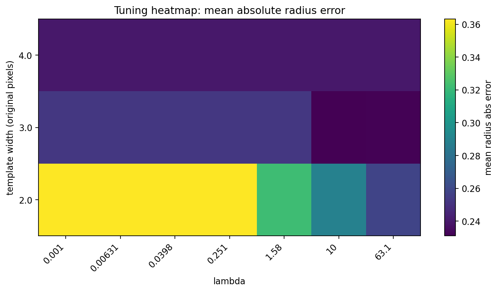
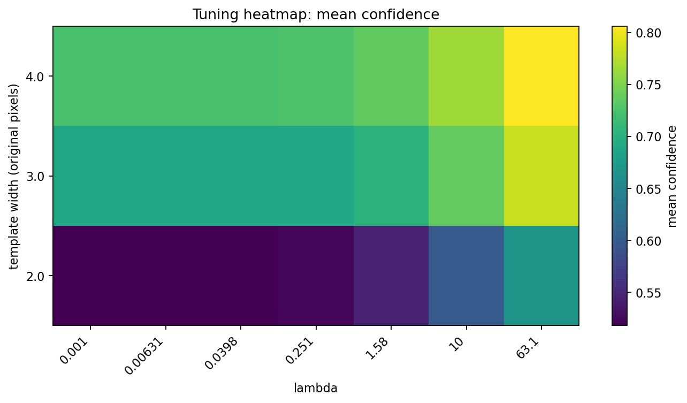
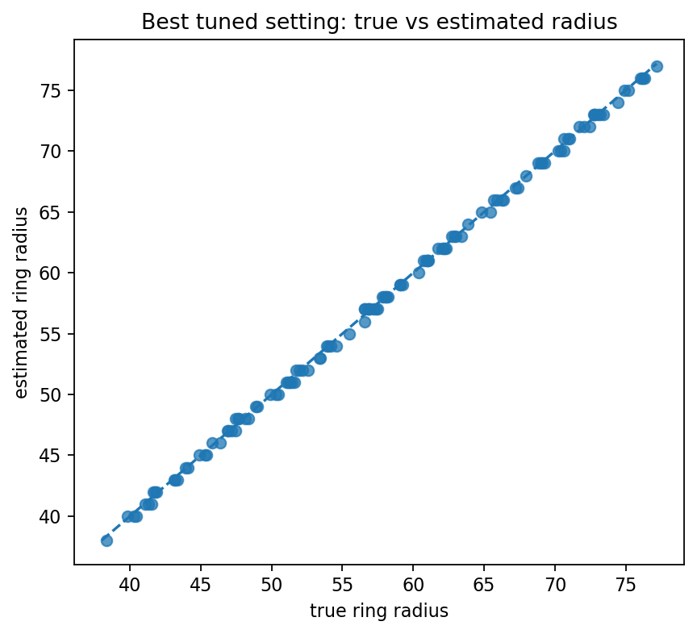
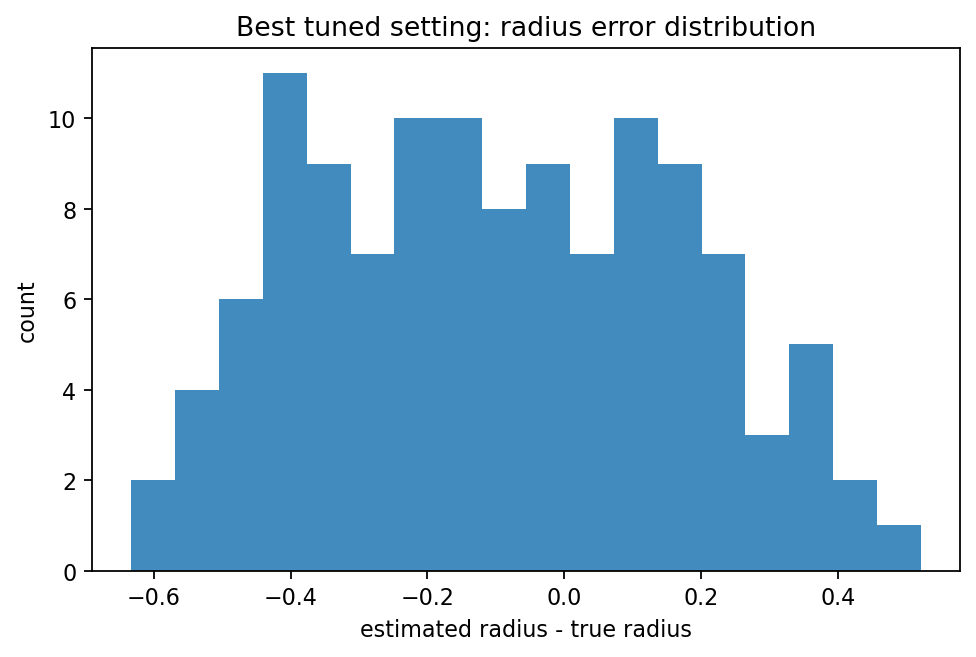
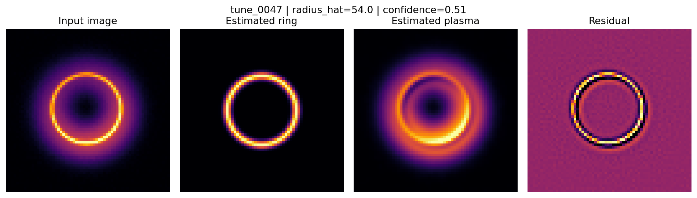
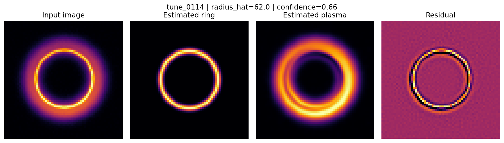
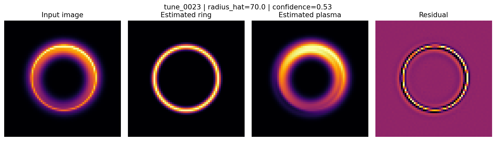
Held-out inference and ring-emphasized outputs
On new images, the calibrated estimator is applied without retuning. It estimates ring parameters in Fourier space, reconstructs ring and plasma components in image space, and produces a diagnostic image in which the ring is brightened with a confidence-controlled boost while plasma remains visible as context.
Everything in this section belongs to the original Fourier-domain prototype from the first note. The next section keeps that baseline intact and adds a separate synthetic validation suite for the later coherence and subring refinements.
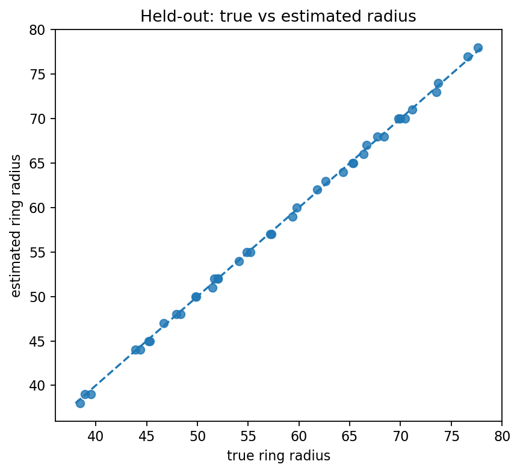
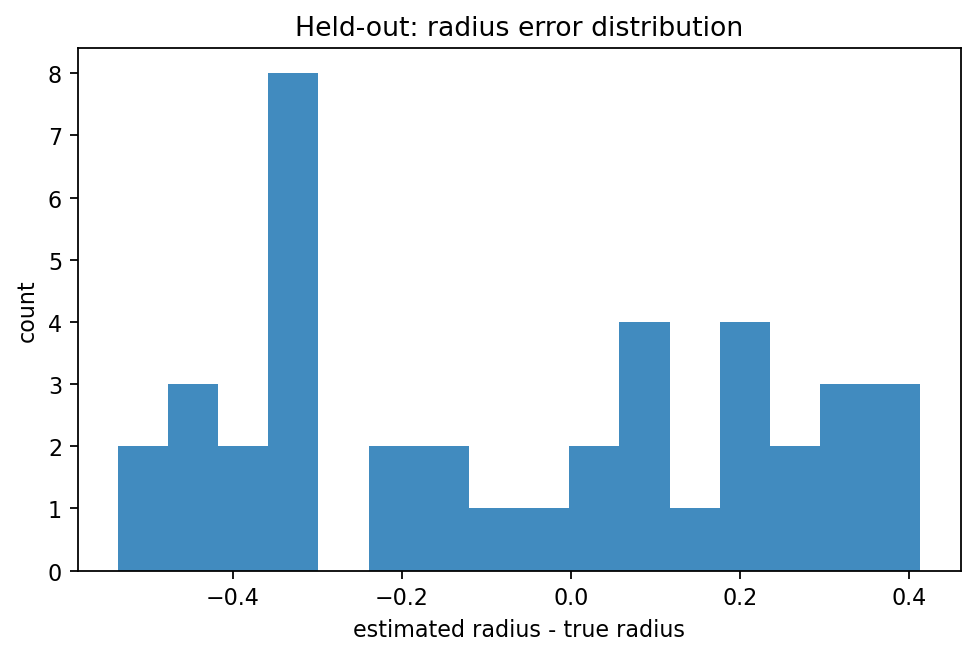
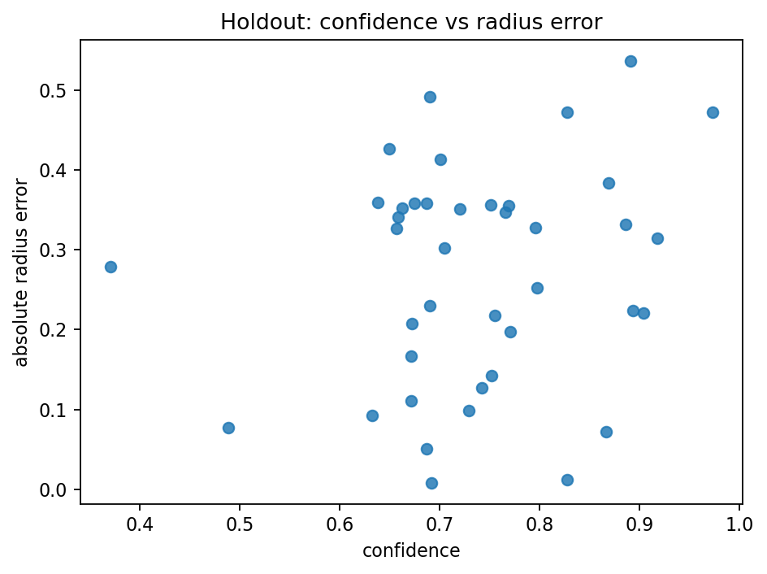
holdout_0153
true radius = 51.99, estimated radius = 52.00, absolute error = 0.008 px
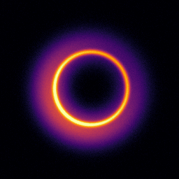
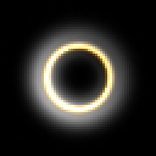
holdout_0139
true radius = 65.31, estimated radius = 65.00, absolute error = 0.315 px
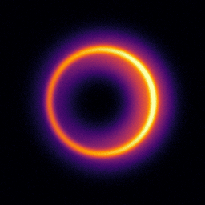
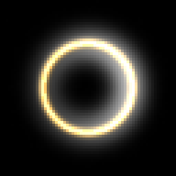
holdout_0129
true radius = 73.54, estimated radius = 73.00, absolute error = 0.536 px
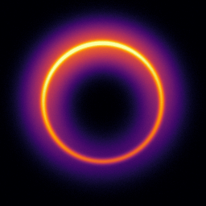
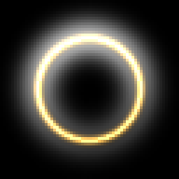
Separate coherence and subring validation suite
The baseline prototype above remains unchanged. To test the later provenance / coherence and subring mathematics without rewriting that pipeline, the repository now includes a second synthetic suite under coherence_subring_validation/. It adds a designed criticality-gap dial, a true four-subring signal tower, and a held-out comparison between the amplitude heuristic, the monolithic ring model, and two- and four-subring estimators.[9][2][3][7][8]
What the second experiment adds
The later notes need latent structure that the original dataset does not contain. This suite therefore introduces that structure explicitly rather than stretching the first prototype beyond what it was designed to validate.
- 120 tune images and 60 held-out images at 192 x 192 resolution
- five designed gap levels that modulate near-critical leakage into the nuisance term
- a true four-subring signal tower with $\alpha_n = \alpha_1 e^{-\gamma(n-1)}$
- a controlled nuisance built from a broad crescent, a near-critical shell, and diffuse blobs
Main quantitative takeaways
Subring-aware models cut held-out radius error by about half relative to the monolithic structured model: 0.424px for the two-subring model and 0.433px for the four-subring model, versus 0.833px for the monolithic model and 0.883px for the amplitude heuristic.
The four-subring model gives the best ring reconstruction quality with mean relative ring MSE 0.231 versus 0.564 for the monolithic model. The designed gap also behaves as intended: empirical coherence falls as the gap widens, with an exponential fit coefficient $\beta \approx 0.15$, and the weighted subring bound upper-bounds aggregate coherence on every held-out case.


Limitations and next steps
What this prototype already shows
- The abstract source-separation story can be instantiated operationally.
- A ring-aware estimator can be tuned directly from image-generated synthetic data.
- The output can be rendered back into image space for direct visual interpretation.
- The prototype supports the central conceptual argument.
Natural upgrades
- elliptical or spin-informed ring families instead of purely circular templates
- explicit baseline masks and more realistic visibility sampling
- provenance-constrained nuisance classes inside the main recovery code instead of purely smooth Fourier penalties
- subring-resolved ring families inside the main estimator rather than only in the separate validation suite
- cross-Gram or $A_b^*A_r$ estimates from ray tracing / simulation to evaluate coherence directly rather than through a designed synthetic gap
- criticality indices that turn geometric separation into a computable recoverability diagnostic in a more realistic forward model
- uncertainty bands or posterior summaries instead of point estimates only
- mission-style diagnostics that tie confidence to actual recoverability margins
References
- Jonathan R. Landers, A Fourier-Domain Analysis of BHEX for Photon-Ring Inference, 2026. manuscript/fourier-domain-analysis-bhex.pdf
- Jonathan R. Landers, Geodesic-Provenance Coherence Bounds for Fourier-Domain Photon-Ring Inference, 2026. manuscript/geodesic_coherence_bhex_note.pdf
- Jonathan R. Landers, A Summary of the Geodesic-Coherence Refinement for Fourier-Domain Photon-Ring Inference, 2026. manuscript/geodesic_coherence_summary_note_updated.pdf
- Black Hole Explorer Collaboration, Black Hole Explorer: Motivation and Vision, arXiv:2406.12917. https://arxiv.org/abs/2406.12917
- Black Hole Explorer Collaboration, The Black Hole Explorer: Photon Ring Science, Detection and Shape Measurement, arXiv:2406.09498. https://arxiv.org/abs/2406.09498
- Black Hole Explorer Collaboration, Interferometric Inference of Black Hole Spin from Photon Ring Size and Brightness, arXiv:2509.23628. https://arxiv.org/abs/2509.23628
- Jonathan R. Landers, Subring-Resolved Structured Separation for Fourier-Domain Photon-Ring Inference, 2026. manuscript/subring_resolved_bhex_note.pdf
- Jonathan R. Landers, A Summary of the Provenance-and-Subring Refinement for Fourier-Domain Photon-Ring Inference, 2026. manuscript/subring_refinement_summary_note.pdf
- Jonathan R. Landers, Geodesic Provenance and Structured Source Separation for Photon-Ring Inference, 2026. manuscript/geodesic_provenance_bhex_note.pdf
- Jonathan R. Landers, Geodesic Provenance, Coherence Gaps, and Subring Structure for Photon-Ring Inference, arXiv-style manuscript, 2026. manuscript/arxiv/coherence_gaps_subrings.pdf